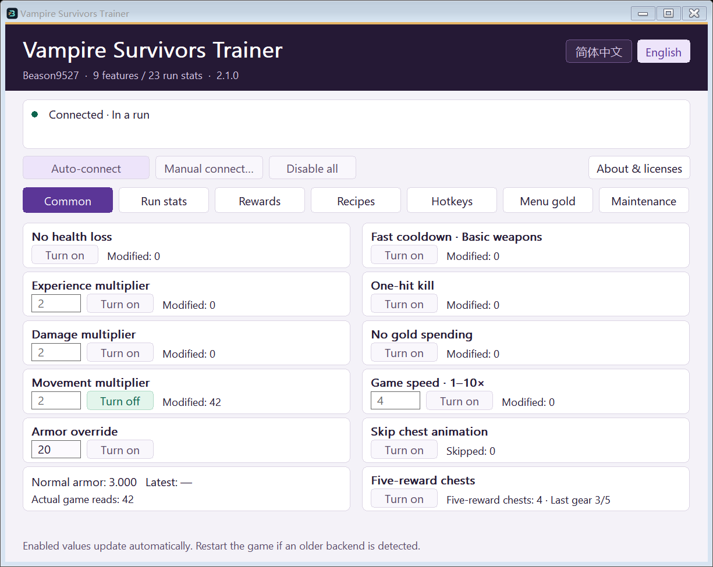

Beason9527 · Windows x64 · Steam 单人模式
吸血鬼幸存者修改器 PC 版Vampire Survivors Trainer
适用于 Steam《吸血鬼幸存者》单人模式的 Windows 修改器。单个 EXE，无需安装，支持简体中文和英文。
前往 GitHub 下载正式版兼容性与功能
适配游戏 1.16.111（Steam Build 25984009）。新版本兼容性请以 GitHub 发布说明为准。
- 生命保护、经验和伤害倍率、技能冷却及游戏加速。
- 自定义快捷键、武器合成查询，以及本机存档备份与恢复。
界面预览


Beason9527 · Windows x64 · Steam single-player
Vampire Survivors Trainer
A standalone Windows trainer for the Steam single-player mode. One EXE, no installer, with English and Simplified Chinese interfaces.
Download from GitHubCompatibility and features
Supports game version 1.16.111 (Steam Build 25984009). Check the GitHub release notes for the latest compatibility information.
- Health protection, experience and damage multipliers, cooldown controls, and game speed controls.
- Custom hotkeys, weapon recipe lookup, and local save backup and restoration.
Interface previews